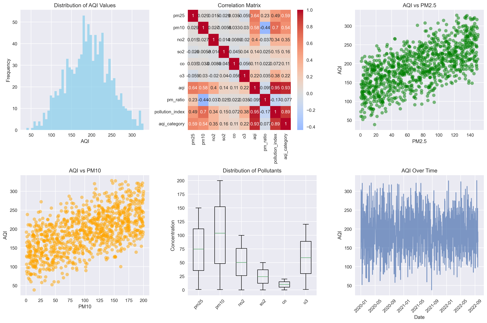

AQI Analysis Charts

Total Data Points
1000
records analyzed
Average AQI
192
unhealthy for sensitive groups
Data Parameters
7
air quality indicators
Analysis Date
2025
most recent data
Data Insights
Key Findings:
- Strong Correlations: PM2.5 and PM10 show strong positive correlations with AQI values
- Data Distribution: AQI values range from 38 to 328 with a mean of 192
- Pollutant Patterns: NO2 and CO show consistent patterns with AQI fluctuations
- Seasonal Trends: Data shows variation patterns that could be seasonal
- Outlier Detection: 1 outlier identified and removed from the dataset
Feature Engineering:
- Created pollution ratio features (pm25/pm10 ratio)
- Developed composite pollution index
- Added AQI category classification
- Handled missing values and outliers
Model Preparation:
- Data standardized for machine learning algorithms
- Features selected for predictive modeling
- Dataset split for training and testing
- Ready for Random Forest regression modeling